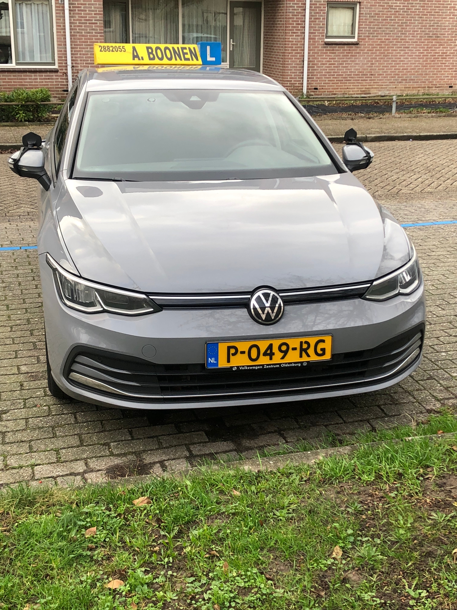

Mijn naam is Jolanda Boonen en ik geef autorijles sinds 1995. De rijschool bestaat al sinds 1960, mijn vader is toen gestart met de rijschool. Na zoveel jaar rijles ben ik al die tijd enthousiast en gedreven gebleven in het geven van rijlessen. Alles draait erom dat er op een veilige en verantwoorde manier gereden wordt. Bij rijschool A. Boonen leer je alle aspecten wat essentieel is om veilig de weg op te kunnen met je rijbewijs. Dit is o.a door de auto eigen te maken door op de juiste wijze de auto kunnen bedienen en de beheersing tijdens het rijden. Ook wordt er gewerkt aan verkeersinzicht d.m.v. het vooruitkijken in het verkeer en de theorieregels toe te kunnen passen tijdens het rijden. Ook doorstroming van het verkeer is een vand de vele onderdelen. Het is bij onze rijschool altijd mogelijk om eerst een proefles te nemen waar je dan ook kunt kijken of het klikt met de instructeur. De leerling moet zich immers wel op zijn gemak kunnen voelen bij een instructeur, zodat de rijopleiding ook leuk en niet ongemakkelijk voelt. Hiervoor bent u dus bij rijschool A. Boonen aan het juiste adres om uw rijbewijs te halen. Ik geef rijles in Utrecht en okstreken dus ook bijvoorbeeld in Nieuwegein, Ijsselstein, de Meern, Houten en Vleuten. Dus alle steden rondom Utrecht.
 onze tarieven contact